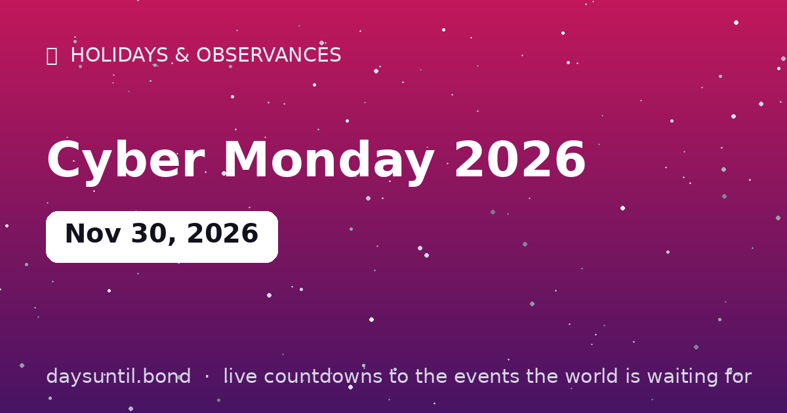

How Many Days Until Cyber Monday 2026?
Cyber Monday 2026 falls on Monday, November 30, 2026.
As of October 24, 2026: 37 days to go — 5 weeks and 2 days, 26 weekdays (11 weekend days), about 888 hours.

Quick facts
| Date | Monday, November 30, 2026 |
|---|---|
| Category | Holiday / observance |
About Cyber Monday 2026
Cyber Monday 2026 falls on Monday, November 30, 2026. The Monday after Black Friday, invented in 2005 as the online answer to in-store doorbusters — now the year's single biggest e-commerce day in many countries.
The live counter above updates every second and automatically switches to 'days since' once the day arrives.
Why Cyber Monday exists
Cyber Monday was invented rather than inherited. The term was coined in 2005 by the National Retail Federation's online arm after analysts noticed a consistent spike in e-commerce traffic on the Monday after Thanksgiving — people returning to work, on a fast office connection, finishing the shopping they had started over the weekend. Twelve years before that, most Americans were still on dial-up at home, which is precisely why the pattern existed.
It has since grown into the biggest online shopping day of the year in several markets, and the distinction between it and Black Friday has largely dissolved: most Black Friday pricing is now available online, and Cyber Monday's remaining edge is concentrated in electronics, software, subscriptions and digital goods.
Cyber Monday 2026: what the date means
Cyber Monday 2026 is Monday, November 30 — three days after Black Friday and 25 days before Christmas. That 25-day window is the practical constraint for anything that ships: it is enough time for standard delivery in most of the US and Europe, but not for anything that goes through a personalisation step or a slow international leg.
Because Christmas 2026 falls on a Friday, the last full working week before the holiday ends on Friday December 18 — which is also the weekend of the year's two biggest film releases. Delivery networks are at their most congested in the fortnight between Cyber Monday and that week.
What tends to be cheapest on Cyber Monday
The pattern over the last several years is reasonably stable. Laptops, monitors, tablets, headphones, smart home devices, software licences and subscription services see their steepest Cyber Monday cuts, because those are categories where inventory is digital or centrally held and the marginal cost of a discount is low. Appliances, furniture, mattresses and clothing tend to do better on Black Friday, where a physical footprint and clearance stock drive the offers.
The most reliable test is a price history rather than a headline percentage. A '60% off' label against an inflated list price is the single most common trick of the weekend; the same item tracked for a month is the only honest comparison.
Cyber Monday dates through 2030
| Year | Cyber Monday | Days after Black Friday | Days to Christmas |
|---|---|---|---|
| 2026 | November 30 | 3 | 25 |
| 2027 | November 29 | 3 | 26 |
| 2028 | November 27 | 3 | 28 |
| 2029 | November 26 | 3 | 29 |
| 2030 | December 2 | 3 | 23 |
How to tell a real discount from a fake one
The most common trick of the weekend is not a lie, it is a comparison against the wrong number. A '60% off' label is usually measured against a list price the item has not sold at for months, and some retailers quietly raise that list price in the weeks beforehand to make the percentage look larger. The only honest reference is the price the same item has actually sold at over the preceding month.
Three checks catch most of it: track the item rather than the banner with a price-history chart; watch unit pricing, because multipacks are frequently dearer per unit than the standard pack beside them; and check model numbers, since a laptop or television built for the sale often differs by one digit from the model reviewed in October, with cheaper internals in the same shell.
Returns, refunds and your rights
The return window matters more than the discount when you are buying a month before a holiday, because the recipient cannot tell you it does not fit until December 25. Most major retailers now offer an extended holiday return window — purchases made from early November can often be returned into January — but the terms vary by retailer and by category, and electronics are frequently carved out.
Statutory rights differ sharply. In the EU and UK, distance selling gives a 14-day cooling-off period on most online purchases regardless of the retailer's own policy, and the return window starts on delivery rather than purchase. In the United States there is no federal right to return a non-faulty item; the window exists only because the retailer offers it. Check the policy before you buy, not after.
Cyber Monday around the world
Cyber Monday has been exported almost everywhere the term Black Friday has, and in several markets it is the larger of the two. It is a major shopping day in the UK, Canada, Germany, France, Spain, Italy, Brazil, Australia, Japan, India and much of Latin America, where it is often localised — Cyber Lunes in Spanish-speaking markets, Black Friday Cyber in parts of Europe.
Because it is a purely commercial invention with no holiday attached, it travels more easily than Black Friday does: there is no Thanksgiving to explain, and the online-only framing suits markets where big-box in-store doorbusters never existed.
Is it worth waiting for Cyber Monday in 2026?
Less than it used to be. Now that most retailers run 'early Black Friday' pricing through the first three weeks of November, the honest answer is that no single day is reliably the year's floor — the price of a specific item moves on its own schedule, not on the retail calendar. Waiting for November 30 as a strategy is a bet, not a plan.
What works better is a target price. Track the item through October, decide the number at which it is worth buying, and buy when it hits that number — whenever that is. Some of the best deals of the season appear in the second week of November and never return on the Monday; others genuinely only appear on the day. The counter at the top of this page tells you how long you have, not when to spend.
Your Cyber Monday 2026 countdown milestones
It is easier to plan against fixed points than against a number that moves. These are the dates on which the countdown to Cyber Monday 2026 passes each marker between now and the day itself — the last one falls on Sunday 29 November, when there will be 1 day left.
| Milestone | Day | Date | Remaining |
|---|---|---|---|
| 30 days | Saturday | 31 October 2026 | 30 days to go |
| 14 days | Monday | 16 November 2026 | 14 days to go |
| 7 days | Monday | 23 November 2026 | 7 days to go |
| 3 days | Friday | 27 November 2026 | 3 days to go |
| 1 days | Sunday | 29 November 2026 | 1 day to go |
How the remaining time breaks down
37 days is the headline, but it is rarely the number that helps. 26 of those are weekdays and 11 fall on a weekend, which is the split that matters if you are planning around work. It is 5 weeks and 2 days, or roughly 1.2 months, or about 888 hours.
| Unit | Until Cyber Monday 2026 |
|---|---|
| Days | 37 |
| Weeks | 5 weeks and 2 days |
| Months (approx) | 1.2 |
| Weekdays | 26 |
| Weekend days | 11 |
| Hours | 888 |
| Sleeps | 37 |
Working days are Monday to Friday and do not subtract public holidays, which vary by country and employer — the full month-by-month split is on our weekday page for Cyber Monday 2026.